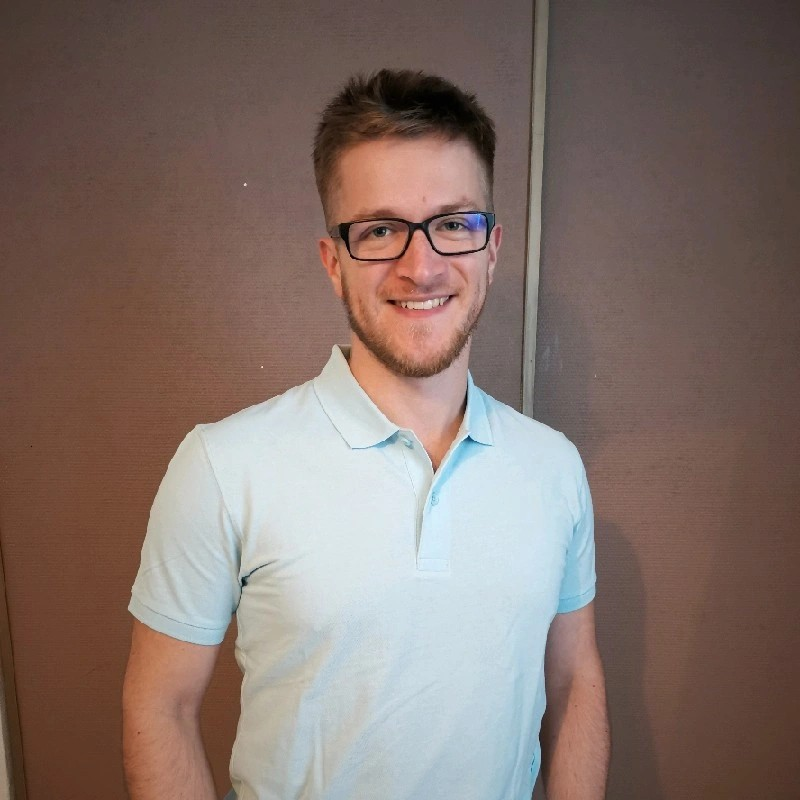

Fort de 4 ans d'expérience en développement Full-stack (Angular/Spring Boot), je suis à
la recherche d'une nouvelle opportunité où la passion pour la technologie se conjugue
avec un environnement de travail sain et formateur.
Je suis particulièrement motivé à l'idée de contribuer à des projets passionnants au
sein d'une équipe qui promeut l'apprentissage continu et le bien-être de ses
collaborateurs.
Ouvert aux postes en télétravail ou hybride.
Formations
-
Master 2 "Numérique pour les Environnements Connectés"
(2019-2021)
Université de Pau et des Pays de l'Adour
-
Licence 3 "Informatique pour les sciences du vivant"
Université de Pau et des Pays de l'Adour
-
BTS Services Informatiques aux Organisations (SIO) - Option SLAM
(2017-2019)
Lycée Bahuet
Langues & Centres d'Intérêts
Langues
- Français : Langue maternelle
- Anglais : Professionnel (Lu, parlé, écrit)
Centres d'Intérêts
- Jeu d'échecs (Classement en ligne ~1000 Elo)
- Pelote basque (Pratique régulière, +3 ans)
- Musique
- Univers médiéval fantastique